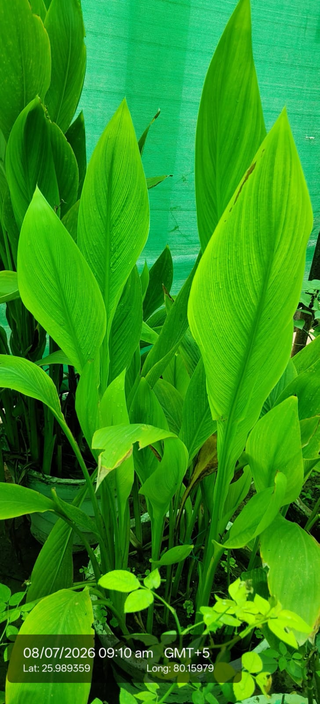

| Scientific name | Curcuma longa |
|---|---|
| Family | Zingiberaceae |
| Category | Herbs |
Habitat & Growing Conditions
- Native to South Asia. Widely cultivated across India
- Very common in UP including Kanpur area at your coordinates. Grown in home gardens, farms, and pots like in your photo
- Thrives in tropical climate with warm, humid conditions
- Needs well-drained, fertile soil and partial shade to full sun
- Herb grows 0.6-1 m tall. Leaves are large, broad, oblong, bright green with prominent parallel veins, arranged alternately from a central rhizome. This matches your photo
- Underground stem is the orange-yellow rhizome we use as spice
Ecological & Economic Importance
- Spice & Food: "Golden Spice". Rhizome used fresh or dried as turmeric powder in cooking, curries, and for color. Essential in Indian kitchens
- Medicinal: Contains curcumin. Used in Ayurveda for anti-inflammatory, antiseptic, wound healing, digestion, and immunity. Applied to cuts and skin problems. Note: Consult a healthcare professional before any medicinal use
- Other uses: Natural dye for textiles and cosmetics. Used in religious rituals, cosmetics, and beauty products like face packs
- Commercial: Major cash crop of India. India is the largest producer and exporter of turmeric in the world